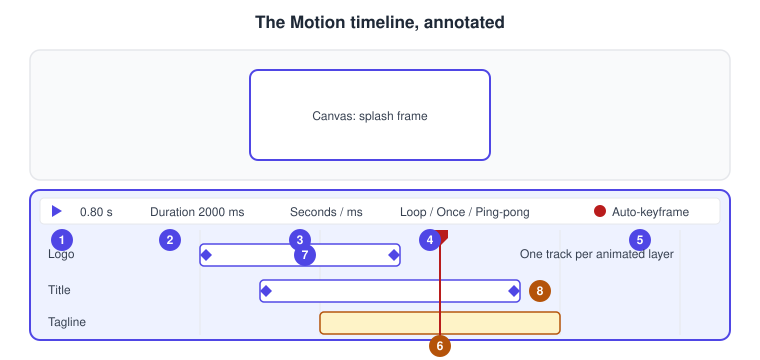
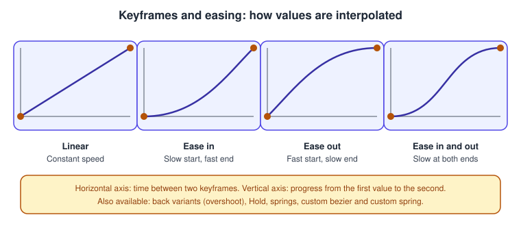
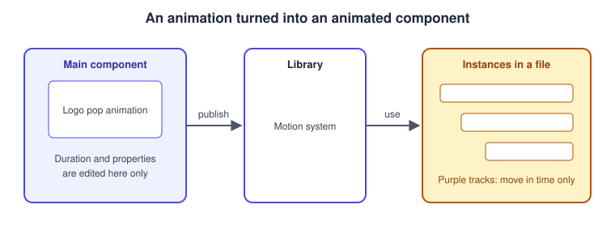
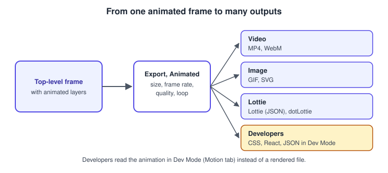
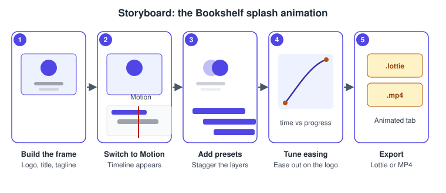

Figma Motion
|
This content was generated with the assistance of AI and should be verified against the official documentation before being relied on in production. |
This page was written on 2026-10-30 against the UI3 interface of Figma Design. Figma Motion is a mode of Figma Design that adds a keyframe timeline to a design file. According to the help centre it is in open beta: features may change and performance problems may appear, so check the list of beta features before relying on a detail. The help articles state that the timeline, keyframes and easing are available to anyone with edit access to the file on any plan, which in practice means a Full seat. Creating animated components is available on Starter, Professional, Education, Organization and Enterprise plans, and publishing them to a library needs Professional, Education, Organization or Enterprise. Developers read animations in Dev Mode with a Dev seat or a Full seat. Plan names only are given here; see Plans, Seats and AI Credits.
Figma Motion is different from prototype animation. A prototype animation (Smart Animate, dissolve, push) is a transition between two frames that plays when a user interacts; see Smart Animate and Prototyping Basics. Motion animates the properties of layers inside one frame over time, like a short film: a logo that pops in, a loader that spins, a banner that slides.
The running example is the Bookshelf app. Its splash screen shows a logo, the title "Bookshelf" and a tagline. The goal is a two-second intro that is exported as a Lottie file for the app, plus an MP4 for a store listing.
The model
-
Frame: Motion animates layers inside a frame. To export, the animated layers must be in a top-level frame (a frame placed directly on the canvas).
-
Timeline: a panel across the bottom of the screen with one layer track per animated layer.
-
Keyframe: a value of one property at one moment. Between two keyframes Figma interpolates.
-
Animation (preset): a ready-made movement applied to a layer, with settings, a duration and an easing.
-
Easing: how the progress between two values accelerates and decelerates.
-
Animated component: a component whose layers carry animation, reusable through a library.

-
Play/Pause and current time: the field shows the playhead position and accepts a value to jump to a time.
-
Duration: new animations default to 2000 ms; type a value or drag the handle at the right of the timeline.
-
Time unit: toggles the display between seconds and milliseconds.
-
Playback: cycles through Loop, Once and Ping-pong (forward, then backward).
-
Auto-keyframe: records each change as a keyframe while it is on.
-
The playhead: the moment shown on the canvas.
-
Keyframes on a layer track, shown as diamonds.
-
A layer track: drag it to move all its animations, or drag an edge to change their duration.
Source: Figma Learn: Motion timeline
Where it lives in UI3 and the shortcuts
Switch the toolbar toggle of a design file from Design to Motion; the timeline appears at the bottom. If the toggle is missing, check that you have edit access. Drag the top edge of the timeline to resize it, or use Collapse timeline. Zoom the timeline with the slider at its right, a trackpad pinch, or Command (macOS) or Control (Windows) with the mouse wheel. The Animations section of the right sidebar lists the animations of the selection.
| Action | macOS | Windows |
|---|---|---|
Play or pause |
Space |
Space |
Delete the selected keyframes |
Delete |
Delete |
Add to a keyframe selection |
Shift-click |
Shift-click |
Snap dragged keyframes to the playhead |
Hold Shift while dragging |
Hold Shift while dragging |
Zoom the timeline |
Command and scroll wheel |
Ctrl and scroll wheel |
The help articles list only these shortcuts for the timeline; do not assume others exist without checking the Actions menu (Command K on macOS, Ctrl K on Windows).
Keyframes and auto-keyframe
Any property that can be keyframed shows a diamond beside its field in the right sidebar. Opacity, position and rotation are the examples in the help article; it gives no complete list, so test the property you need.
There are two ways to create keyframes.
-
Manual: move the playhead to the start time, click Add keyframe beside the property and set the starting value; move the playhead to the end time and enter the new value. This gives precise control of each layer and property.
-
Auto-keyframe: turn on Toggle auto-keyframe in the timeline controls. A red bar appears across the timeline and each edit on the canvas or in the right sidebar creates a keyframe. Every change is recorded, so an accidental edit creates an unwanted keyframe; turn it off when finished.
To edit, click a keyframe to select it (selected keyframes are filled), double-click to move the playhead to it, Shift-click or drag a box to select several, and drag to retime. The distance between two keyframes sets the speed: wider spacing means slower motion. Double-click a keyframe and change the value in the right sidebar to edit it. Selecting a property and pressing Delete removes all its keyframes.

Presets and animation styles
Presets add movement without manual keyframes. There are two kinds.
-
Individual preset animations for basic movement. Select the layers, click the plus in the Animations section of the right sidebar, choose an animation type and configure it (the settings depend on the type).
-
Composite animation styles, which apply several presets at once. Select the layers, open the Animations section, choose a style, then select one animation to fine-tune it.
New animations start at the playhead. Drag an animation to move it, or its handles to change its duration. Afterwards you can change the type, the type-specific settings, the duration and the easing. Custom animation styles can be created and published so that motion stays consistent with a motion design system. Presets need edit access.
Easing, springs and variables
Easing controls acceleration. Click the line between two keyframes, or select a preset animation, and pick from the Easing menu.
-
Bezier curves: Linear, Ease in, Ease out, Ease in and out, three back variants (Ease in back, Ease out back, Ease in and out back) that wind up or overshoot, and Hold, which jumps to the end value and stays until the next keyframe.
-
Springs: the presets Gentle, Quick, Bouncy and Slow.
-
Custom: Custom bezier (two control points, four values) and Custom spring (a spring editor or a Bounce field). Drag handles or type values; Y values outside 0 to 1 produce overshoot.
Custom curves and springs can be saved as variables, so a design system shares one definition of "standard ease out". How variables, collections and modes work is covered on Variables, Collections and Modes, and the use of variables as design tokens on Design Tokens. The motion overview also mentions easing and timing variables for switching motion values quickly.
Other animation features
The help centre also describes time-stamped comments tied to a moment of the animation, and the Figma agent, which can add keyframes to the timeline from a description (not available to K-12 or high school Education users). Further capabilities that animation tools usually offer, such as motion paths, anchor points, path trim, text animation and audio, were not confirmed in the articles read for this page; check the Motion design fundamentals collection and the release notes before depending on them.
Animated components
Animations can become reusable components. Components can currently only be created in Design mode: select the layers, create a component from the right sidebar, the context menu or a shortcut, and Figma nests the layers in a component frame. Instances behave like normal instances but also appear as purple tracks on the timeline. You can reposition them in time, but you can edit an animation’s duration and properties only on the main component, and component properties cannot be changed in Motion (switch to Design mode). Component basics are on Components and Instances.

Source: Figma Learn: Animated components
Exporting animations
Select a top-level frame, open the Animated tab in the Export section, choose a format, set the options and click Export.
-
MP4, WebM, GIF and SVG for rendered or vector output.
-
Lottie (a single animation as raw JSON) and dotLottie (a compressed archive that can hold several animations).
-
Settings: size (a preset or custom), frame rate, quality (lossy compression for MP4 and WebM only) and loop (GIF loops or plays once).
-
Limits: export works on any plan, but animations larger than 1920 by 1080 or above 30 FPS need a paid plan. Viewers can export unless the owner restricted copying and sharing.
-
Lottie caveats: shaders, video and angular gradients are unsupported (shaders and angular gradients become flat images); drop shadows, noise and glass effects are partly supported. Complex animations can hurt playback performance, so test on the target player.
Static export is described on Exporting Assets, and video fills and Lottie playback on Video, GIFs and Lottie.

Source: Figma Learn: Export animations
Handing animations to developers
In Dev Mode, select the animated frame, open the Motion tab in the Inspect panel and choose Show in timeline view for a read-only timeline next to the code. Under Code, CSS is the default; switch to React or JSON and copy. The help article also describes copying motion.dev code. The Figma MCP server can provide keyframes, motion type, timing and easing to a coding agent when you give it the frame link. See Dev Mode.
Procedure: the Bookshelf splash animation

-
Build a top-level frame of 390 by 844 with a logo, the title "Bookshelf" and a tagline, named "Splash" (panel 1).
-
Switch the toolbar toggle to Motion. The timeline appears; leave the duration at 2000 ms (panel 2).
-
Select the logo, click the plus in the Animations section and add a preset such as a scale or fade. Add the same kind of preset to the title and the tagline and drag their tracks so each starts about 200 ms after the previous one (panel 3).
-
Click the logo animation and choose Ease out in the Easing menu. Press Space to preview. If you want a house style, save a custom curve as a variable (panel 4).
-
To fine-tune one value, turn on auto-keyframe, set the playhead to 1.2 s, change the tagline opacity, then turn auto-keyframe off.
-
Select the Splash frame, open Export, choose the Animated tab, pick Lottie (or dotLottie) and click Export. Repeat with MP4 at 1920 by 1080 or smaller for the store listing (panel 5).
-
In Dev Mode, check the Motion tab and copy the CSS if the web landing page needs the same effect.
Common mistakes
-
Leaving auto-keyframe on and creating unwanted keyframes with every nudge.
-
Animating layers outside a top-level frame and finding nothing to export.
-
Exporting to Lottie with shaders, video or angular gradients and being surprised by flat images.
-
Using a frame above 1920 by 1080 or 30 FPS on a free plan and meeting the export limit.
-
Editing an instance’s animation duration, which is only possible on the main component.
-
Ignoring users who are sensitive to motion: keep movement short and offer a reduced-motion alternative; see Accessible and Inclusive Design.
Where older guides are outdated
Guides written before 2026 say that Figma has no timeline: only prototype transitions existed. Figma Motion, with its keyframe timeline, entered open beta at Config 2026 (2026-06-24 according to the release notes). Lottie files used to come from third-party plugins (for example LottieFiles); native export of Lottie, dotLottie, MP4, WebM and GIF has been available since 2026-09-30 according to the release notes, which should be rechecked because Motion is still in beta. Older guides also show the pre-UI3 interface, which was retired on 2025-04-30. Source: Figma release notes